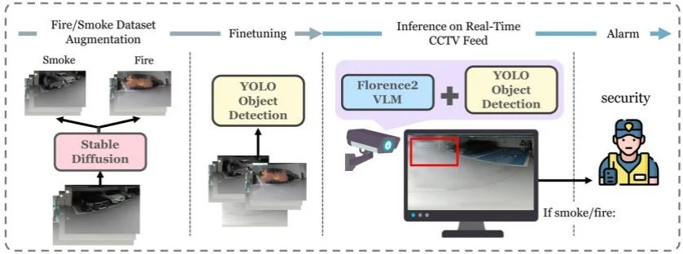
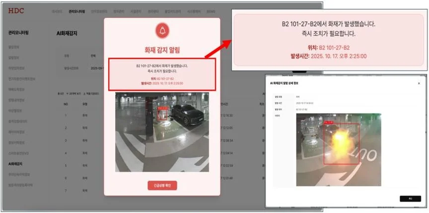
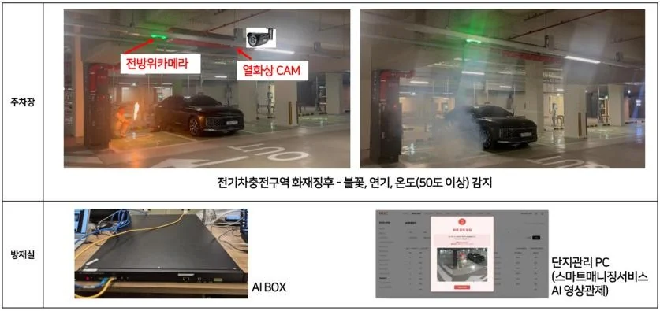
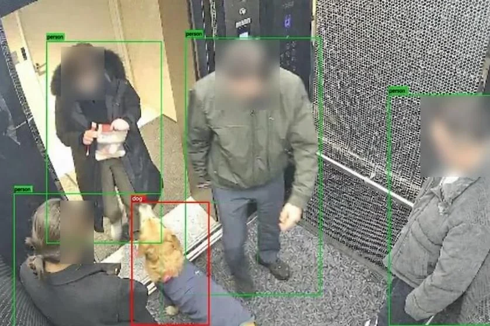
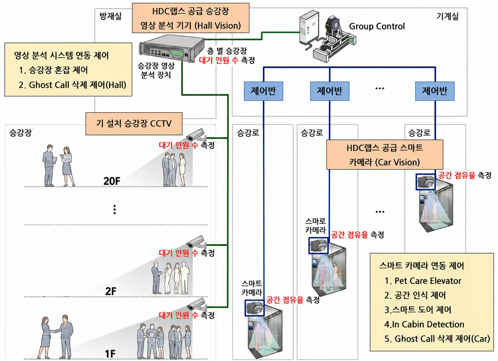

HDC LABS
Computer Vision
Edge Deployment
Synthetic Data
Work & Activities
-
2024
-
2024 – 2025
-
2025
-
2025 – 2026
-
2026 ~
-
2026 ~
-
2025 – 2026K-Digital Training (KDT)강사, 멘토Instructor, Mentor기사 ↗News ↗생성형 AI 분석 및 서비스 개발Generative AI for Analytics & Service Development
-
2026일학습병행Work-Study Program기업현장교사 3급On-site Mentor
Projects
프로젝트를 선택하면 아래에 상세 내용이 표시됩니다. Select a project to view its details below.
지하주차장 화재 감지 보조 시스템 Underground Parking Fire Detection Assistance System
핵심 역할Key role
AI 시스템 개발 주도 (데이터, 모델 학습, 판단 구조)Led AI system development (data, model training, decision pipeline)
협업PoC(팀 엔지니어 2명), 하드웨어/현장 포팅(수호이미지), 플랫폼/알람(내부 플랫폼팀)WithPoC (2 team engineers), hardware/field porting (Suho Image), platform/alerts (internal platform team)
1기술 PoC 및 연구Technical PoC & Research
연구 필요성Motivation
- 잇따른 지하주차장 전기차 화재 발생으로 전용 화재 감지 시스템 요구
- 이상온도 조기 감지 및 자동 알림이 가능한 화재 감지 보조 시스템 구축 필요
- Recurring EV fires in underground parking lots created demand for a dedicated detection system
- An auxiliary system with early thermal-anomaly detection and automatic alerts was needed
담당 업무Responsibilities
- 지하주차장 CCTV 환경 특화 합성 데이터 생성
- 화재/연기 탐지 YOLO 모델 재학습 및 검증
- YOLOv8s + VLM(Florence2) 기반 탐지 PoC 설계
- Built underground-parking CCTV-specific synthetic data
- Retrained and validated YOLO fire/smoke detectors
- Designed a YOLOv8s + VLM(Florence2) detection PoC
업무 성과Achievements
- 합성 데이터 활용으로 화재/연기 탐지 정량 성능 향상F1 0.82 → 0.86, 연기 recall 0.70 → 0.83
- 연구 성과를 지식재산권으로 확보 — 논문 1건 게재, 특허 1건 출원YOLO-VLM 기반 실내 화재 감지 (ICLRW 2025)
- Improved fire/smoke detection accuracy using synthetic dataF1 0.82 → 0.86, smoke recall 0.70 → 0.83
- Secured intellectual property from the work — 1 paper published, 1 patent filedYOLO-VLM-based indoor fire detection (ICLRW 2025)

2현장 적용을 위한 재설계Redesign for Field Deployment
기존 문제점Problem
- 초기 VLM 중심 PoC 구조가 엣지 디바이스 제약으로 현장 적용에 한계
- The initial VLM-centric PoC hit field-deployment limits under edge-device constraints
담당 업무Responsibilities
- YOLOv8n + CLIP 경량 구조 + Hailo 듀얼칩으로 재설계
- 외부 포팅 업체, 내부 플랫폼팀과 협업해 모니터링/알람 서비스 연동
- Redesigned to a YOLOv8n + CLIP lightweight architecture on a dual-chip Hailo runtime
- Connected monitoring/alert services with an external porting vendor and the internal platform team
업무 성과Achievements
- 단순 모델 교체가 아닌 판단 구조를 사후 검증 방식으로 재설계하여 현장 제약 충족
- Reworked the decision pipeline as post-hoc verification (not a simple model swap) to satisfy field constraints

3실 적용 현황Field Deployment Status
담당 업무Responsibilities
- 광명센트럴아이파크 전기차 충전구역 화재 감지 보조 시스템 시연 및 적용
- 현장 운영 중 모델 오탐 이슈 원인 분석 및 재학습 대응
- Demonstrated and deployed the auxiliary fire detection system at Gwangmyeong Central IPARK's EV charging zone
- Diagnosed field false-positive issues and addressed them through retraining
업무 성과Achievements
- 반복 오탐 유형을 학습 데이터로 재반영하여 검증 성능을 유지하며 오탐 감소
- 현장 운영 데이터를 활용한 후속 고도화 연구로 논문 2건 추가 게재경량 초해상화 기술 검토 (ICCVW 2025)합성 데이터 생성 자동화 (WACVW 2026)
- Fed recurring false-positive patterns back into training, cutting false alarms while preserving validated performance
- Published 2 follow-up papers from advancement research on field-operation dataLightweight super-resolution study (ICCVW 2025)Automated synthetic data generation (WACVW 2026)

엘리베이터 내부 상황 분석 시스템 In-Elevator Situational Analysis System
핵심 역할Key role
AI 시스템 개발 주도 (데이터, 모델 학습, 판단 로직, 배포)Led AI system development (data, model training, decision logic, deployment)
협업하드웨어(팀 엔지니어 2명, 내부 IoT팀), E/V 제어(현대엘리베이터)Withhardware (2 team engineers, internal IoT team), E/V control (Hyundai Elevator)
1기술 PoC 검증Technical PoC Validation
업무 목표Objectives
- AI 기반 엘리베이터 내부 상황 실시간 분석 시스템 개발
- 점유 상태, 반려견 합승 등 특이상황 자동 탐지 및 대응
- Developed a real-time AI system for analyzing situations inside elevators
- Automatically detect and respond to special cases such as cabin occupancy and pets boarding
담당 업무Responsibilities
- 기술 제휴 MOU 검토용 내부 상황 분석 PoC 설계
- 반려견 검출 및 점유율 추정 모델 구축
- Designed the in-elevator situational-analysis PoC to support a partnership MOU
- Built models for pet detection and cabin-occupancy estimation
업무 성과Achievements
- 3D detector와 VLM 결합 구조로 실시간 동작 가능성 검증RTX 6000 Ada 기준 약 3 FPS 실측
- HDC랩스, HDC현대산업개발, 현대엘리베이터 기술 제휴 MOU 체결PoC 검증 결과를 3사 기술 제휴 검토의 기술적 근거로 활용HDC현산, 서울원 아이파크에 AI 승강기 도입
- Verified real-time feasibility with a combined 3D-detector + VLM architecture~3 FPS measured on an RTX 6000 Ada
- Reached a three-party MOU among HDC LABS, HDC Hyundai Development, and Hyundai ElevatorPoC results served as the technical basis for the three-party partnership reviewHDC Hyundai Development to deploy AI elevators at Seoul One IPARK

2엣지 환경 재설계와 데이터 전략Edge Redesign & Data Strategy
기존 문제점Problem
- 협력사의 10Hz 상태 송신 요구 등 실서비스 엣지 환경 제약 충족 필요
- top-view 차폐 등 엘리베이터 특수 시점 대응 데이터 부족
- Real-service edge constraints such as a partner's 10 Hz status-streaming requirement had to be met
- Data was scarce for the elevator's special viewpoint, including top-view occlusion
담당 업무Responsibilities
- 엣지 기반 경량 단일 파이프라인으로 재설계
- 운영 시나리오 중심 판단 로직 최적화 및 CAN payload 출력 연동
- 도메인 특화 합성 데이터 생성 체계와 실환경 데이터 확보 및 정제
- Redesigned the system into a lightweight, edge-based single-detector pipeline
- Optimized scenario-driven decision logic and CAN-payload output integration
- Built a domain-specific synthetic-data pipeline and collected/cleaned real-world data
업무 성과Achievements
- Jetson에서 10Hz 상태 송신 조건 충족 및 사내 엘리베이터 2대 실연동전체 프로세스 10~13 FPS 실측, E/V 운행 및 도어 제어 검증
- 내부 7개 시나리오 평균 KPI 97.7% 달성으로 제품화 가능성 확인
- 도메인 특화 합성 데이터 생성 연구로 반려견 검출 성능 향상, 논문 1건 게재반려견 검출 mAP50-95 0.47 → 0.79합성 데이터 생성 자동화 (WACVW 2026)
- Met the 10 Hz status-streaming requirement on Jetson and integrated two in-house elevators~10–13 FPS end-to-end; validated E/V operation and door control
- 97.7% average KPI across 7 internal scenarios, confirming productization readiness
- Domain-specific synthetic-data-generation research improving pet detection, with 1 paper publishedPet-detection mAP50-95 0.47 → 0.79Automated synthetic data generation (WACVW 2026)

3현장 배포 자동화Field Deployment Automation
기존 문제점Problem
- 코드 수정마다 현장 엘리베이터로 가서 USB로 수동 업데이트하는 운영 비효율
- 개발 PC와 현장 환경 차이, 버전 추적 부재로 안정적 배포 어려움
- Every code change required visiting the elevator for a manual USB update
- Environment gaps between dev PC and field, with no version tracking, made stable deployment hard
담당 업무Responsibilities
- 코드, 모델, 의존성을 Docker 이미지로 묶는 배포 흐름 설계 및 CI/CD 구축
- ARM64 호환 위한 사무실 Jetson self-hosted runner 네이티브 빌드 구성
- PT hash engine cache 도입으로 동일 PT 재빌드 생략
- Designed the deployment flow and built a CI/CD that bundles code, model, and dependencies into a Docker image
- Set up an in-office Jetson self-hosted runner for ARM64-native builds
- Introduced a PT-hash engine cache to skip rebuilds for the same PT
업무 성과Achievements
- 수동 USB 업데이트에서 git push 기반 자동 배포로 전환사내 반영까지 약 2분
- Shifted from manual USB updates to git push-driven automatic deployment~2 min to in-house rollout
4연구 확장 및 IPResearch & IP
연구 계기Background
- 사내 사업개발팀의 추가 기술 개발 가능성 문의
- Inquiry from the in-house business-development team on the feasibility of additional technical development
연구 성과Results
- 가능성 검토를 위한 후속 연구 진행
- 특허 3건 발명자 등재
- Conducted follow-up research to assess that feasibility
- Named inventor on 3 patents


지적재산권 확보 Intellectual Property Portfolio
업무 배경Background
- 자체 개발한 핵심 알고리즘과 시스템의 권리화
- HDC 그룹의 AI 기술 자산 확보 및 경쟁력 강화
- Patent prosecution for core algorithms and systems developed in-house
- Build the HDC Group's AI technology assets and strengthen competitiveness
담당 업무Responsibilities
- 주요 프로젝트 결과물에 대한 청구항 설계
- 특허 사무소가 작성한 명세서 검토
- 우선심사 신청을 위한 기술 자료 정리 및 근거 자료 작성
- 국제 학회 논문 작성, 투고, 심사 대응
- Drafted claim structures for the outputs of major projects
- Reviewed patent specifications drafted by external patent attorneys
- Compiled technical evidence and supporting documents for expedited examination requests
- Wrote, submitted, and managed reviewer responses for international conference papers
업무 성과Achievements
- KR 특허 11건 등록, 3건 출원 진행
- 국제 학회 논문 4편 게재
- 자세한 목록은 홈 Publications 및 Patents 섹션 참고
- 11 KR patents granted, 3 additional applications in progress
- 4 papers published at international venues
- See the home page Publications and Patents sections for the full list